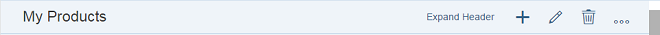
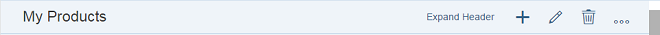
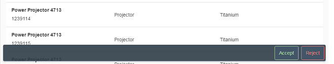
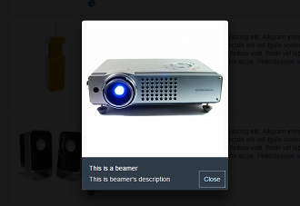

What's New in SAPUI5 1.42
What's New in SAPUI5 1.42
sap.f.DynamicPage: This control is an SAP Fiori 2.0 control, designed to support the basic SAP Fiori 2.0 floorplans. You can use this control as a basic layout for an app. It consists of a title, a header, content area, and a floating footer. It offers dynamic behavior when scrolling, where part of the header snaps to the title. It offers additional capabilities, such as expanding or snapping the header when clicking on the title, pinning or unpinning the header so that it always stays expanded, and more. 
There is an option for displaying a footer as a toolbar with additional actions. The footer is also known as a “floating footer”, as it appears to float above the content of the page. The benefit of the new footer look-and-feel is that it is easily recognized by the end user.
For more information, see the API Reference and the sample.
-
sap.m.LightBox: TheLightBoxcontrol is used to display an image in its original size. When the user clicks on a thumbnail, aLightBoxcontaining the image opens in a new popup. The popup also contains a title and subtitle. For more information, see the API Reference and the sample. -
sap.m.Tree: TheTreecontrol provides a tree structure for displaying data in a hierarchy. Since it extendssap.m.ListBase, it provides many of the same features already known fromsap.m.List. For more information, see the API Reference and the sample. -
sap.ui.comp.smartmicrochart.SmartRadialMicroChart: TheSmartRadialMicroChartcontrol has been added to theSmartMicroChartcontainer insap.ui.complibrary. The control analyzes the metadata document of an OData service for the specified entity set and renders the respectiveRadialMicroChartcontrol for its visualization. As in otherSmartMicroCharts, theSmartRadialMicroChartcontrol uses the OData metadata annotations to determine the binding paths and values inside the chart. For more information, see the API Reference and the sample.
-
sap.m.Carousel: TheCarouselcontrol has two enhancements.-
The enumeration
CarouselArrowsPlacementdetermines where the arrows will be placed (on the sides of the content or on the sides of the page indicator). -
The page indicator now shows numbers instead of bullets, when the number of items in the
Carouselis above nine.

-
-
sap.m.Combobox: TheComboboxcontrol now automatically scrolls to the selected element, so that the user sees the element selected in the initial dropdown box, which may not be visible in large dropdown boxes. -
sap.m.FeedListItem: TheFeedListItemcontrol now incorporates thesap.m.FormattedTextcontrol that allows HTML-formatted text to be displayed. For more information, see the API Reference and the sample. -
sap.m.FlexBox: The render typeBarehas been added to theFlexBoxcontrol. It allows flex items to be rendered without a wrapping HTML tag. For more information, see the API Reference and the sample. -
sap.m.IconTabBar: TheIconTabBarcontrol has two enhancements:-
headerModehas a new value calledInline. This mode displays the text and the count in one row. -
showOverflowSelectListcan be enabled when you have a large number of tabs and cannot display them all at once. When this property is set, all tabs that cannot be shown are added to an overflow list.
-
-
sap.m.MultiComboBox: We have implemented touch support on mobile devices for theMultiComboBoxcontrol. The behavior of the control is now aligned with other similar controls such asSelectandComboBox. -
sap.m.Sliderandsap.m.RangeSlider: These controls have two new properties:-
inputsAsTooltipsadds an input field above the slider handle. This enables users to directly enter the desiredSlidervalue. -
showAdvancedTooltipwhen enabled, the handle will always display the slider value as a tooltip.
-
-
sap.m.ObjectListItemandsap.m.ObjectHeader: These controls can now display all markers of typesap.m.ObjectMarkerwith the use of a newmarkeraggregation. The possible values areFlagged,Favorite,Locked,Draft, andUnsaved. For more information, see the API Reference for sap.m.ObjectListItem and sap.m.ObjectHeader, and the samples Object List Item - Markers Aggregation and Object Header - Markers Aggregation. -
sap.m.ObjectMarker: With the use of a newadditionalInfoproperty, you can now add descriptive text next to the displayed marker, for example Locked by User. For more information, see API Reference. -
sap.m.UploadCollection: TheUploadCollectioncontrol has the following new properties:-
uploadButtonInvisible: With this new property, you can make the Upload button invisible in your application if you want to prevent the user from uploading a file, either in the instant upload or in the upload pending scenario of theUploadCollectioncontrol. -
terminationEnabled: With this new property, you can make the Terminate Upload button invisible in your application if you want to prevent the user from terminating an instant upload in theUploadCollectioncontrol.
-
-
sap.m.ViewSettingsDialog: You can now customize the search behavior in the filter details page with the use of the new propertyfilterSearchOperatorwith the possible valuesContains,Equals, andStarts With. There is also a new methodsetFilterSearchCallbackthat can set a custom filter callback if the predefined filters are not sufficient. For more information, see the API Reference and the sample. -
sap.suite.ui.commons.ProcessFlow: In theProcessFlowcontrol, the new statusCriticalhas been implemented. This status can be used when a critical issue occurrsed in the current process. The new status that fulfills this condition is calledCriticaland it is associated with the process flow node. For more information, see the API Reference and the sample. -
Tooltip enhancement for all controls in the
sap.suite.ui.microchartlibrary: To get the tooltip to also be visible when micro charts are created from template methods, retrieving and displaying the tooltip is now independent from the method in which the micro chart was created. For more information, see the API Reference and the sample. -
sap.suite.ui.microchart.ComparisonMicroChart: You can now set minimum and maximum values for theComparisonMicroChartcontrol. By setting these values, an application can define a fixed size for the measurement scale to get an optimized representation of the compared values. For more information, see the API Reference and the sample. -
sap.ui.comp.smartfield.SmartField: For improved performance, you can now use thefetchValueListReadOnlyproperty if you want to prevent the value help from being requested for a read-onlySmartFieldcontrol. To use this property, you have to maintain thecom.sap.vocabularies.Common.v1.Textannotation . For more information, see sap.ui.comp, the API Reference, and the sample. -
sap.ui.comp.smartmicrochart.SmartMicroChart: The qualifier for theUI.Chartannotation term has been added to theSmartMicroChartcontrol to support multipleUI.Chartannotations for an OData service. Depending on the qualifiers, you can now separate these multiple annotations and handle the different OData annotations in this control. -
sap.ui.layout.BlockLayout: TheBlockLayoutcontrol has been updated to comply to the new SAP Fiori 2.0 design. The color schemes forMixed,Bright, andAccenthave been updated to the new design. For more information, see the sample. -
Improved controls for the Visual Interaction toolkit (
sap.ui.vklibrary):-
The library now includes initial support for "Smart 2D" files (2D VDS models).
-
Redlining controls were improved for redlining drawing and rendering. For more information, see API Reference:
sap.ui.vk. -
sap.ui.vk.Loco: TheLococontrol has been updated to improve the handling of redlining gestures. For more information, see API Reference:sap.ui.vk.Loco.
-
-
sap.uxap.ObjectPageLayout: You can set the footer with the footer aggregation and toggle its visibility using theshowFooterproperty. The footer is slightly transparent, showing the underlying content and is used to provide additional actions. This aligns theObject Pagecontrol with the SAP Fiori 2.0 design concepts. For more information, see the API Reference and the sample.
Enhancements for the SAP Fiori 2.0 Design
-
New theme Belize Deep: The SAP Fiori 2.0 design now supports a new dark flavor of the Belize theme, called Belize Deep. It can be enabled with parameter
sap_belize_plus. -
New library
sap.f: This library contains new controls built especially for SAP Fiori 2.0, for examplesap.m.DynamicPage. -
Floating footer toolbar: The
sap.uxap.ObjectPageLayoutandsap.m.Pagecontrols are enhanced with the new floating footer. The newsap.f.DynamicPagecontrol comes with this feature by default.
SAPUI5 OData V4 Model
The new version of the SAPUI5 OData V4 model introduces the following features:
-
Deleting entries
-
Loading annotation files
Due to the limited feature scope of this version of the SAPUI5 OData V4
model, check that all required features are in place before developing
applications. Double check the detailed documentation of the features, as
certain parts of a feature may be missing although you might expect these
parts as given. While we aimed at being compatible with existing controls,
some controls might not work due to small incompatibilities compared to
sap.ui.model.odata.(v2.)ODataModel, or due to missing
features in the model (like tree binding). The interface for applications
has been changed for easier and more efficient use of the model. For a
summary of these changes, see Changes Compared to OData V2 Model.
For more information, see OData V4 Model, the API Reference, and the sample in the Demo Kit.
One Page Acceptance Tests (OPA5)
-
waitForstatements in actions and automatic waiting: When writing custom actions you can now addwaitForstatements inside theactionand they will be executed before thesuccesscallback. This allows you to have complex reuse actions that interact with multiple controls.There is a new entry
autoWaitin thesap.ui.test.Opa.config.Opa5.extendConfig({ autoWait: true });true, everywaitForstatement will execute extra checks before executing anactionorsuccessto see if the UI is in a stable state. For example, there is automatic waiting forXMLHttpRequests(request to your server). OPA will not continue before those requests are done. It also works with a mock server that has a delay. For more information, see API Reference:sap.ui.test.Opa5.waitFor. -
New matcher
sap.ui.test.matchers.I18NText: TheI18NTextmatcher checks if a control property has the same value as a text from an i18n file. It also checks that the key is in the property file. This allows you to catch all your typos and make your tests independent from the browsers language. For more information, see the API Reference and the sample. -
Improved troubleshooting: When OPA encounters a timeout, it collects the most recent logs logged under the
sap.ui.testnamespace and puts it in the test's failure message. All parameters of thewaitFormethod are now validated up front to immediately cause the test to fail if there is a typo. -
Slowing down the execution: You can now use the new URL parameter
paExecutionDelayto pass onmyOpaTest.qunit.html?opaExecutionDelay=700to every OPA test. This means there will be a pause for 700 milliseconds before a newwaitForstatement is executed. It helps when troubleshooting or if you want to watch OPA clicking through your application because it might be too fast to follow. There is also a dropdown list with three predefined values in your QUnit site.
Navigation and Routing
You can now use the title property for targets and a
titleTarget for routes in the routing configuration to
change the displayed title of an app. For more information, see Using the title Property in Targets.
New Icons
We have 10 new icons - check out the Icon Explorer in the Demo Kit for details.
Parent topic: Previous Versions